M.S. THESIS • MICROFABRICATION • ENERGY STORAGE
New Generation of High-Power Density 3D Interdigitated Supercapacitors
Design, fabrication, electrochemical characterization, and finite-element modeling of glassy-carbon microsupercapacitors for miniaturized biomedical systems.
01 / OVERVIEW
Compact energy storage for microscale biomedical devices.
Miniaturized biomedical and MEMS devices require energy-storage systems that can deliver high power while operating within extremely limited physical space.
This research investigated glassy-carbon interdigitated micro-supercapacitors as a potential solution.
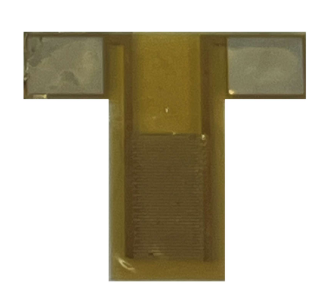
Galileo fabricated microsupercapacitor
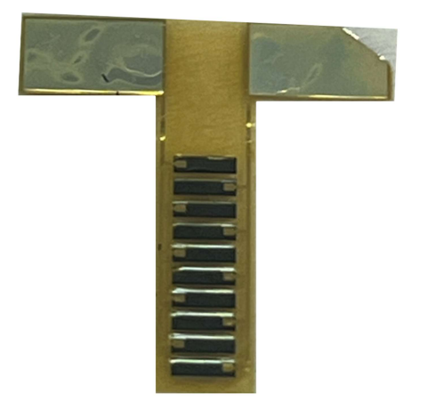
Marco Polo fabricated microsupercapacitor
02 / RESEARCH OBJECTIVE
How does electrode geometry and thickness affect microsupercapacitor performance?
Three-dimensional glassy-carbon electrodes were fabricated at approximate thicknesses of 3 µm, 5 µm, and 9 µm.
Two interdigitated electrode architectures, Galileo and Marco Polo, were evaluated to study the effects of electrode thickness and active surface area on electrochemical performance.
03 / DEVICE DESIGN
Galileo & Marco Polo
Two interdigitated electrode geometries were developed and fabricated. The larger Marco Polo architecture provided greater electrochemically active area, while Galileo offered a more compact electrode configuration.
Galileo
Compact interdigitated electrode architecture used to study the influence of electrode thickness on microscale charge storage.
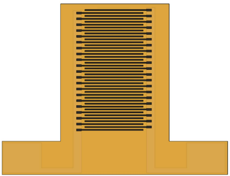
Galileo electrode geometry
Marco Polo
Larger interdigitated electrode geometry designed to increase active electrode surface area and improve charge-storage performance.
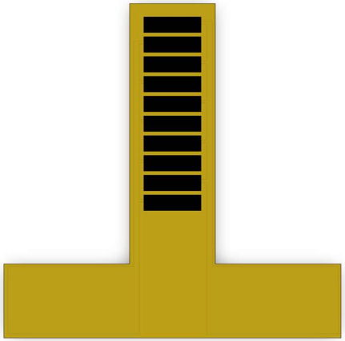
Marco Polo electrode geometry
04 / MICROFABRICATION
From photoresist to glassy carbon.
The devices were produced using a multi-step MEMS fabrication process incorporating photolithography, pyrolysis, polymer insulation, thin-film metal deposition, and sacrificial-layer processing.
Photolithography
SQ-25 photoresist was patterned into interdigitated electrode structures.
Pyrolysis
The patterned photoresist was converted into conductive glassy-carbon electrodes.
Insulation
Polyimide layers were deposited and annealed to electrically isolate device regions.
Current Collectors
Platinum current collectors were deposited to provide electrical connection to the carbon electrodes.
Encapsulation
A second polyimide layer was applied to encapsulate and protect the metal traces.
Release
Sacrificial-layer processing and BHF release produced the final devices.
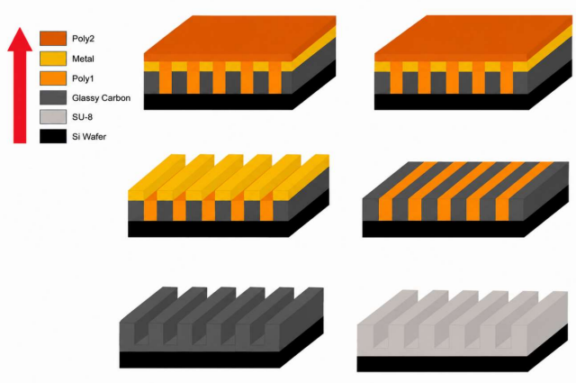
Microsupercapacitor fabrication process
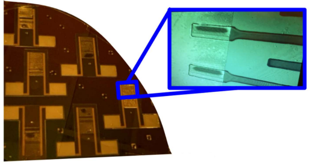
All four Layers of The Galileo Microsupercapacitor on Wafer
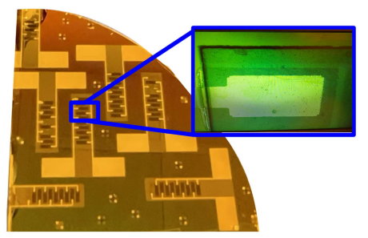
All four Layers of The Marco-Polo Microsupercapacitor on Wafer
05 / ELECTROCHEMICAL TESTING
Characterizing real device performance.
Devices were characterized using phosphate-buffered saline to evaluate capacitive performance under physiologically relevant conditions and ferrocyanide electrolyte to investigate redox-enhanced charge storage.
Cyclic Voltammetry
Evaluated charge storage, capacitance, and reversible electrochemical behavior.
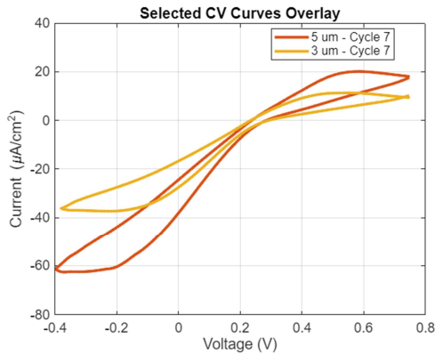
Galileo — cyclic voltammetry in ferrocyanide
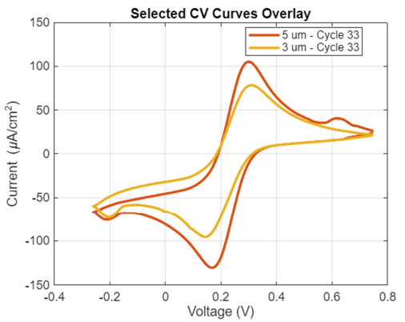
Marco Polo — cyclic voltammetry in ferrocyanide
Electrochemical Impedance Spectroscopy
Characterized impedance, electron transport, and frequency-dependent capacitive behavior.
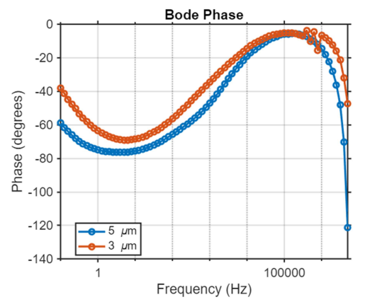
Galileo — EIS in PBS
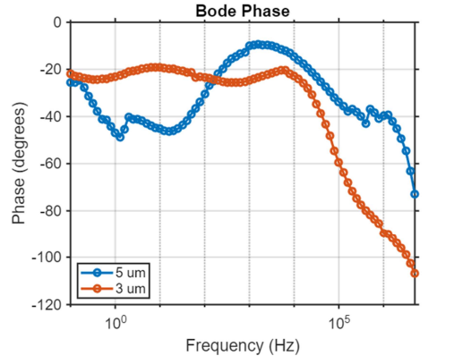
Marco Polo — EIS in PBS
Galvanostatic Charge-Discharge
Examined charge-discharge behavior and energy-storage performance.
06 / KEY RESULTS
The 5 µm devices delivered the strongest overall performance.
Optimal electrode thickness in this study
Highest measured power output for the 5 µm Marco Polo device in ferrocyanide
Energy storage for the 5 µm Marco Polo device in ferrocyanide
Increasing electrode thickness from 3 µm to 5 µm consistently improved charge storage, capacitance, energy storage, and power output.
The larger Marco Polo electrode architecture produced substantially greater charge storage, energy storage, and power output than Galileo because of its larger active electrode area.
The 9 µm devices did not continue the expected improvement trend because fabrication defects, including electrode delamination and exposed metal current collectors, introduced parasitic electrochemical behavior and partial shorting.
07 / FINITE ELEMENT MODELING
COMSOL electrostatic modeling.
A three-dimensional COMSOL model was developed to evaluate electric potential, electric-field magnitude, and stored electrostatic energy throughout the interdigitated Galileo geometry.
Both analytical calculations and finite-element modeling predicted increasing stored electrostatic energy as electrode thickness increased, supporting the relationship between three-dimensional electrode geometry and device performance.
08 / CONCLUSION
Engineering takeaway
Electrode thickness and active electrode area both strongly influence microsupercapacitor performance. Within the devices successfully fabricated in this study, 5 µm glassy-carbon electrodes provided the best balance between electrochemical performance and fabrication reliability.
Future development should focus on improving fabrication reliability for thicker electrodes, particularly sacrificial-layer lift-off, current-collector deposition, and polyimide insulation.
09 / TECHNICAL SKILLS